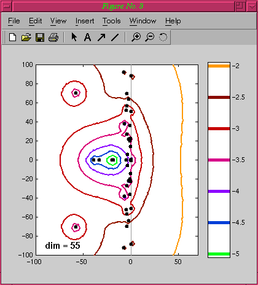

These matrices of dimension 55 come from a flutter analysis of the Boeing 767 aircraft reported in the SLICOT Control and Systems Library (http://www.win.tue.nl/wgs/slicot.html). This model has some adjustable parameters. The unstable matrix (below) corresponds to a set of parameters that lead to an unstable pair of eigenvalues slightly inside the right half-plane. The stable matrix (bottom) corresponds to a different set of parameters, found by Michael Overton, that lead to all eigenvalues in the left half-plane.

EigTool EigTool Demos Menu.